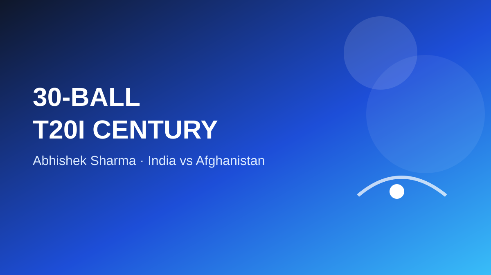

Abhishek Sharma produced one of the most explosive batting performances of the 2026 T20I season in New Delhi, reaching his century from only 30 balls against Afghanistan on September 17. He finished with 108 from 34 deliveries, hitting 9 fours and 11 sixes, as India made 221 for 7 and then bowled Afghanistan out for 94 to win by 127 runs.
A century that arrived in a flash
Abhishek's acceleration was immediate. He reached his half-century in just 16 balls and then needed only 14 more deliveries to complete the next 50 runs. The hundred arrived in the ninth over, turning a quick start into a record-setting innings. The run rate was driven by boundary hitting rather than a long accumulation phase, which is exactly what makes the milestone stand out in T20 cricket.
According to the International Cricket Council, the 30-ball hundred is the fastest T20I century by an Indian batter and the third-fastest T20I hundred overall. The two quicker centuries were scored by players from associate nations: Estonia's Sahil Chauhan reached 100 from 27 balls and Turkey's Muhammad Fahad did it from 29. Because those records came outside the full-member group, Abhishek's mark is also the fastest century in a T20I involving a full-member nation.
More than just the century
The partnership at the top of India's innings was equally important. Abhishek added 142 runs with Sanju Samson, who scored 50, allowing India to reach 100 during the first six overs. That powerplay became a major part of the match story because India had already created enormous scoreboard pressure before Afghanistan's bowlers could slow the scoring rate.
Abhishek eventually fell to Rashid Khan for 108, just before the halfway point of the innings. India then lost momentum and added 79 runs from the final 10 overs, but the damage had already been done. The final total of 221 for 7 gave the bowling attack a substantial cushion.
Afghanistan could not recover
India's bowlers completed the job quickly. Afghanistan were dismissed for 94 in 14.1 overs, producing a 127-run margin. Nitish Kumar Reddy took three wickets, while Axar Patel and Ravi Bishnoi also played important roles. The result completed India's 3-0 sweep of the three-match T20I series.
Why the innings is getting so much attention
The appeal of the performance goes beyond a single record. Fast T20 centuries are among cricket's most visually striking achievements because the entire innings can change within a few overs. Abhishek combined an unusually quick route to 50 with another rapid burst to 100, then finished with 19 boundaries in his 34-ball stay.
There is also a useful context to the timing of the innings. The century came after Abhishek had scored 82 and 39 in the first two matches of the series, according to the ICC. His record therefore formed part of a three-match run rather than appearing in isolation.
What happens next?
India now move toward the Asian Games in Nagoya-Aichi, with the cricket tournament scheduled to begin on September 19. For Abhishek, the immediate significance is straightforward: he has set a new Indian benchmark for speed in T20I hundreds, while his 108 from 34 balls has become the defining score of India's series-clinching performance.
The record book will preserve the 30-ball century, but the match itself will also be remembered for the combination of explosive opening batting, a 221 total and a 127-run victory. In a format designed for rapid momentum swings, Abhishek's innings created that momentum almost instantly.
Sources
ICC — Abhishek's record century seals 3-0 series win for India
The Indian Express — Abhishek Sharma shows Afghans no mercy in 30-ball ton
Al Jazeera / AFP — 30-ball ton leads India to 127-run win